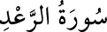

13- RA‘D SÛRESİ
Ra’d sûresi, 43 âyet olup Mekke’de mi, Medine’de mi indiği hakkında ihtilâf
vardır. Sûrenin muhtevâsı göz önüne alınırsa Mekke’de indiğini söyleyenlerin
görüşü biraz daha ağırlık kazanır.
Sûrenin onüçüncü âyetinde gök gürültüsü mânâsına gelen «er-Ra’d» kelimesi
zikredildiği için sûreye bu ad verilmiştir.